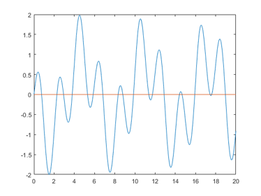

DEMOTAYLOR Short demonstration of Taylor toolbox
Contents
- Some sample applications of the Taylor toolbox
- Initialization of Taylor variables
- Operations between Taylor variables
- Interval Taylor variables
- Affari Taylor variables
- Taylor vector variables
- Complex arguments
- Access to the Taylor coefficients
- Access to the Taylor coefficients of vector variables
- An example: Taylor series
- Inclusion of a function value by Taylor series
- An Application: integration
- Integration using transcendental constants
- A comparison to the Matlab function "quad"
- Enjoy INTLAB
Some sample applications of the Taylor toolbox
The Taylor toolbox computes Taylor coefficients of a univariate function in forward mode, which is conveniently to use by the Matlab operator concept. It works much in the spirit of the gradient and Hessian toolbox, so I recommend to visit the gradient and Hessian demo first, see "demo toolbox intlab".
Initialization of Taylor variables
In order to use the automatic Taylor toolbox, the independent variable need to be identified and a value has to be assigned. This is performed by the function "taylorinit", for example
format compact short _ u = taylorinit(2.89)
Taylor u.t =
2.8900 1.0000 0 0 0
Operations between Taylor variables
If at least one operand is of type Taylor, operations are executed as Taylor operations. For example,
x = taylorinit(3.5); y = sin(3*x-sqrt(x+5))
Taylor y.t =
0.9639 0.7530 -3.8545 -1.0178 2.5661
Note that first component of y is f(x), followed by f'(x), f''(x)/2!, f'''(x)/3!, etc.
Interval Taylor variables
If arguments are of type intval, an inclusion of the true value is computed:
format short
x = taylorinit(midrad(3.5,1e-8));
y = sin(3*x-sqrt(x+5))
intval Taylor y.t =
0.9639 0.7529 -3.8545 -1.0178 2.5661
For f(x):=exp(3*x-sqrt(x)), the result y contains in y.t the function value f(3.5) and the first 4 derivatives:
y.t
intval ans =
0.9639 0.7529 -3.8545 -1.0178 2.5661
Affari Taylor variables
If arguments are of type affari, an inclusion of the true value is computed using affine arithmetic:
x = taylorinit(affari(midrad(3.5,1e-8))); y = sin(3*x-sqrt(x+5))
affari Taylor y.t =
0.9639 0.7529 -3.8545 -1.0178 2.5661
In this case the interval result is very narrow, so there is no difference.
Taylor vector variables
Note that the Taylor toolbox accepts one independent variable. One may initialize a Taylor variable of a vector argument; this is the same as initializing each component as the independent variable (with a different value). It is convenient for function evaluations with many arguments:
f = inline('sin(3*x-sqrt(x+5))')
x = taylorinit([-3 0.1 3.5]')
y = f(x)
f =
Inline function:
f(x) = sin(3*x-sqrt(x+5))
Taylor x.t =
-3.0000 1.0000 0 0 0
0.1000 1.0000 0 0 0
3.5000 1.0000 0 0 0
Taylor y.t =
0.8357 -1.4533 -2.9508 1.6048 1.8148
-0.9258 -1.0500 3.5700 1.3794 -2.2864
0.9639 0.7530 -3.8545 -1.0178 2.5661
Complex arguments
When evaluating the expression for another argument, use the same statement as before with new values. Here we assign the Taylor variable to carry 2 derivatives (the default is 4):
x = taylorinit(-3.5+.2i,4); y = sin(3*x-sqrt(x))
Taylor y.t = Columns 1 through 4 1.7385 + 0.7030i -2.8592 + 4.2242i -7.1868 - 4.5292i 5.4110 - 5.5865i Column 5 4.8130 + 4.3813i
Access to the Taylor coefficients
The Taylor coefficients are accessed by {}, so that y{0} is the function value and y{k} denotes the k-th Taylor coefficient f^(k)(x)/k! :
y{0}
y{1:3}
ans = 1.7385 + 0.7030i ans = -2.8592 + 4.2242i -7.1868 - 4.5292i 5.4110 - 5.5865i
Access to the Taylor coefficients of vector variables
When initializing a Taylor vector, the individual vector components are accessed by () and Taylor coefficients by {}. For example,
f = inline('sin(3*x-sqrt(x+5))')
x = taylorinit([-3 0.1 3.5]')
y = f(x)
y(1)
y{2}(3)
f =
Inline function:
f(x) = sin(3*x-sqrt(x+5))
Taylor x.t =
-3.0000 1.0000 0 0 0
0.1000 1.0000 0 0 0
3.5000 1.0000 0 0 0
Taylor y.t =
0.8357 -1.4533 -2.9508 1.6048 1.8148
-0.9258 -1.0500 3.5700 1.3794 -2.2864
0.9639 0.7530 -3.8545 -1.0178 2.5661
Taylor ans.t =
0.8357 -1.4533 -2.9508 1.6048 1.8148
ans =
-3.8545
accesses the Taylor value f(-3) and the second Taylor coefficient of f(3.5), respectively.
An example: Taylor series
Define
f = inline('sinh(x-exp(2/x))')
f =
Inline function:
f(x) = sinh(x-exp(2/x))
Then the Taylor coefficients 0..7 of f at x=1.234 are computed by
kmax = 7; x = 1.234; y = f(taylorinit(x,kmax))
Taylor y.t =
1.0e+05 *
Columns 1 through 7
-0.0002 0.0017 -0.0089 0.0371 -0.1357 0.4525 -1.4057
Column 8
4.1252
The Taylor coefficients y{k} satisfy f(x+e) = sum[0..k]( y{k}*e^k ) + O(e^(k+1)) :
format long
e = 1e-3;
v = f(x+e)
yapprox = sum( y{0:kmax} .* e.^(0:kmax) )
v = -22.682513324779098 yapprox = -22.682513324779070
Inclusion of a function value by Taylor series
For an inclusion of the function value we may calculate the Taylor coefficients in interval arithmetic and add the error term:
format long _ x = intval('1.234'); Y = f(taylorinit(x,kmax)); e = intval('1e-3'); Y_ = f(taylorinit(x+hull(0,e),kmax+1)); for k=0:kmax Yincl = sum( Y{0:k} .* e.^(0:k) ) + Y_{k+1}*e.^(k+1) end
intval Yincl = -22.68____________ intval Yincl = -22.68251_________ intval Yincl = -22.6825133_______ intval Yincl = -22.682513325_____ intval Yincl = -22.682513324779__ intval Yincl = -22.682513324779__ intval Yincl = -22.682513324779__ intval Yincl = -22.682513324779__
Note how nicely the linear convergence can be observed by the "_"-notation. Also note that this is a true inclusion of f(1.234+1e-3)=f(1.235) because both arguments x=1.234 and e=1e-3 are intervals including the decimal numbers 1.234 and 0.001 (both are not floating-point numbers).
An Application: integration
Consider
f = @(x)(sin(pi*x)-sin(x)); a = 0; b = 20; x = linspace(a,b,1000); close, plot(x,f(x),x,0*x)
It is easy to see that for the transcendental number pi, the true value of the integral of f from a to b is cos(b)-1:
cos(b)-1
ans = -0.591917938186608
There is a rudemtary integration routine "verifyquad" using Romberg's roule based on the Taylor toolbox. It calculates
ApproxIncl = verifyquad(f,a,b) infsup(ApproxIncl)
intval ApproxIncl = -0.591918________ intval ApproxIncl = [ -0.59191828548002, -0.59191759089296]
Integration using transcendental constants
This is a true inclusion of the integral with "pi" denoting the floating-point approximation of the transcendental number pi. To calculate an inclusion of the function with the true transcendental number pi, we use the following program [Note we would better use the inclusion intval('pi'), this is just an example]:
% function y = testfuntaylor(x) % if isintval(x) % Pi = 4*atan(intval(1)); % else % Pi = pi; % end % y = sin(Pi*x)-sin(x); %
The result, however, does not change very much:
TrueIncl = verifyquad(@testfuntaylor,a,b) infsup(TrueIncl)
intval TrueIncl = -0.591918________ intval TrueIncl = [ -0.59191828548006, -0.59191759089293]
A comparison to the Matlab function "quad"
For this particular function the approximate routine may get problems if we specify a little more accuracy:
e = 1e-12; tic, Approx = quad(@testfuntaylor,a,b,e), toc tic, Incl = verifyquad(@testfuntaylor,a,b,e), toc
Approx = -0.591917938186609 Elapsed time is 0.036942 seconds. intval Incl = -0.591917938187__ Elapsed time is 0.084753 seconds.
Note that the verification routine is calculates an inclusion of the 'true' function (with the transcendental number pi). Insisting on even more accuracy make things worse:
e = 1e-14; tic, Approx = quad(@testfuntaylor,a,b,e), toc, tic, Incl = verifyquad(@testfuntaylor,a,b,e), toc
Warning: Maximum function count exceeded; singularity likely. Approx = 0.984600203152193 Elapsed time is 0.063515 seconds. intval Incl = -0.591917938187__ Elapsed time is 0.107179 seconds.
Note that the approximate value has no correct digit, but the Matlab routine "quad" gives no error message.
Enjoy INTLAB
INTLAB was designed and written by S.M. Rump, head of the Institute for Reliable Computing, Hamburg University of Technology. Suggestions are always welcome to rump (at) tuhh.de